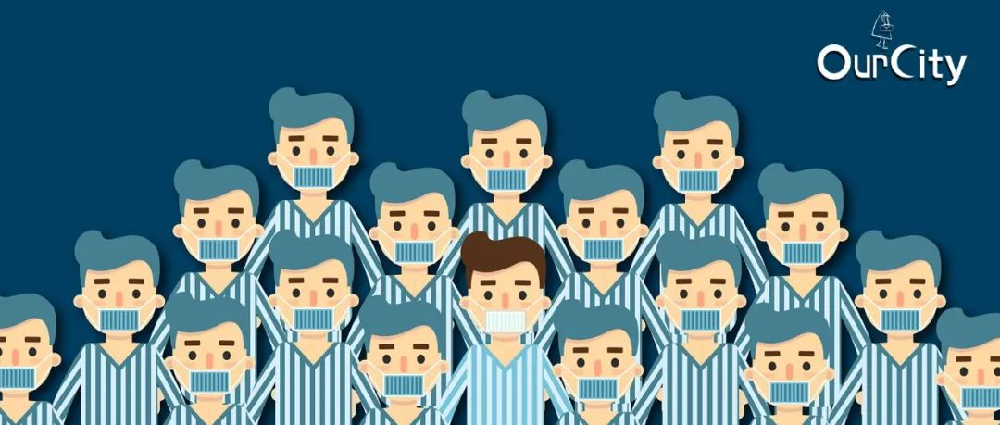
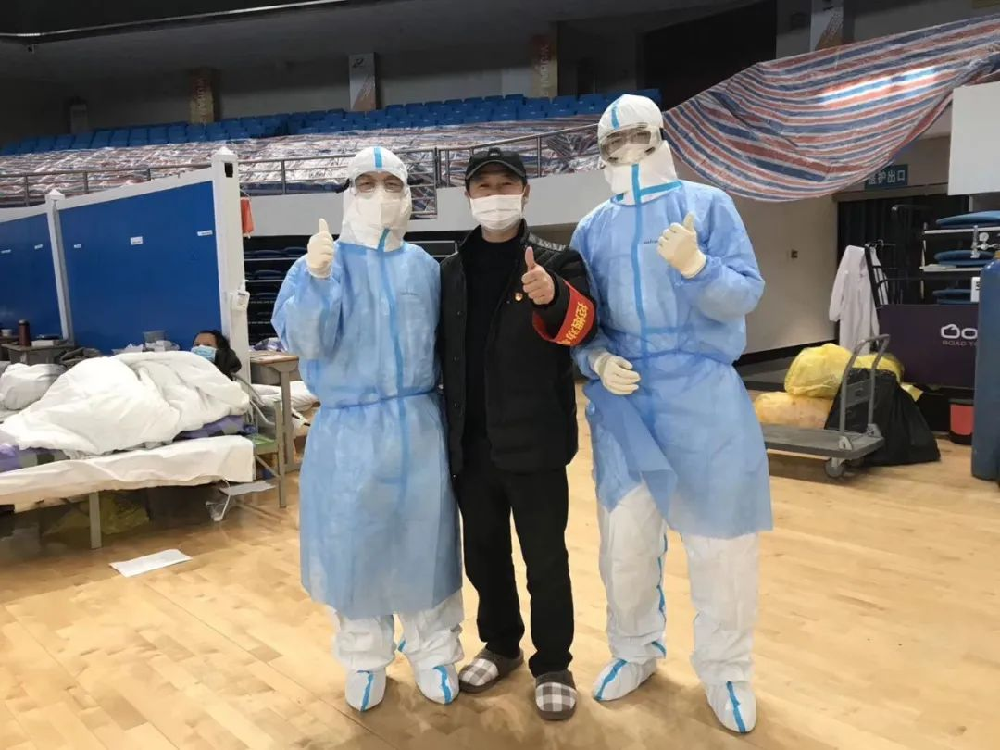
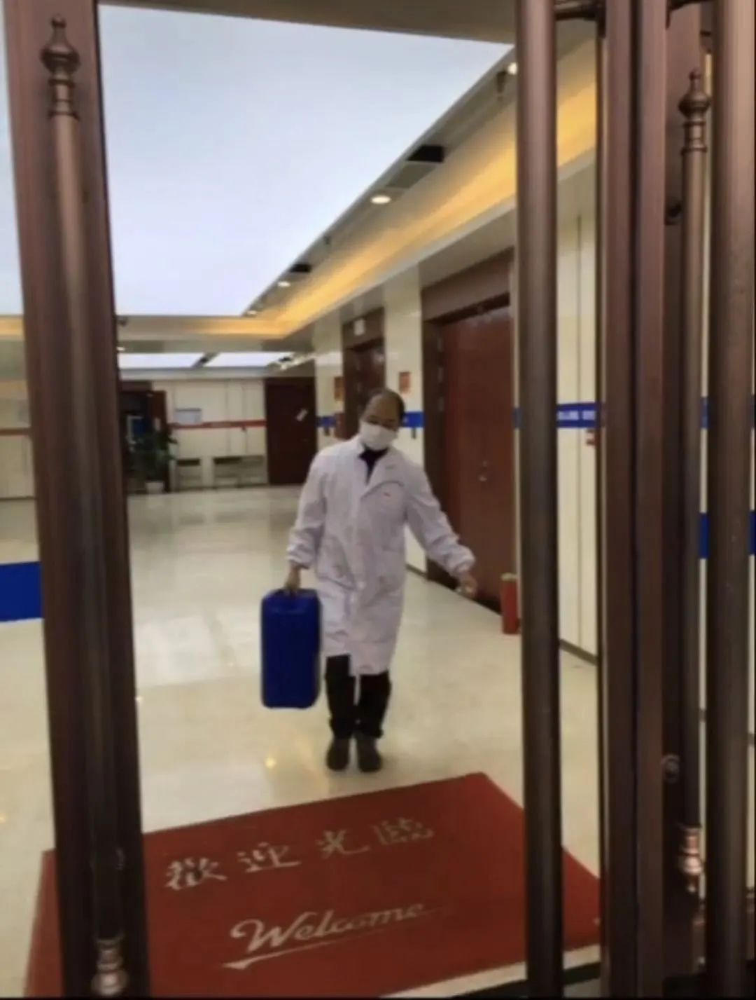
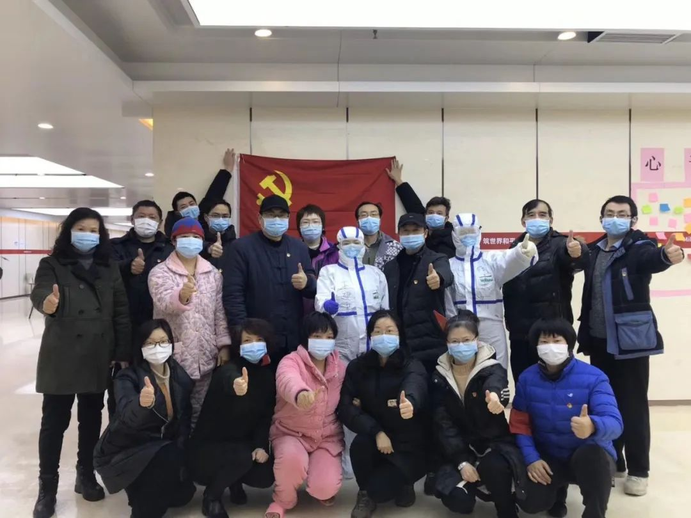

住在方舱的摄影师：这个照片今天在人民日报的首页登了
原文链接 备份链接 一场疫情，让小余一家分离三地。但他依旧认为，自己是不幸的人中，幸运的那个。作为婚纱摄影师的他，如今在方舱里给大家拍照片。他很高兴，“在这样很苦的事里，大家都能表现出一种乐观”。 文 | 吴美芬 小余今年30岁，是一位婚 …



这不同于我们寻常的生活体制，这是一个客观上紧张严肃、主观上轻松活泼的“现实扭曲场”。在方舱里，治疗之外，医生、护士和病人有重新组织起生活的可能性。人们尚且拥有充足的空间和精力，将原有的社会身份和行为习惯投射到新环境中，自觉或不自觉产生的角色期许逐步形成了患者间的角色分工。
作者｜江婧怡
设计 | 范晓雯
张兵，男，48岁，交通警察，中共党员，也是一名武昌方舱医院首批轻症新冠肺炎患者。
当我寻找与方舱有关的采访对象时，作为其中一个病区的“区长”，以及东区的临时党支部书记，张兵被推举出来作为方舱患者面向媒体的发言代表。
2月11日那段在网上广泛流传的方舱医院患者高唱《歌唱祖国》的视频里，举着喇叭放背景音乐的人就是他。除此之外，我在新闻联播、新华社、朝闻天下、焦点访谈、武汉广播电视台、人物等多家媒体的报道中，也都看到了他。
张兵所在的武昌方舱医院是武汉市最早收治患者的三家方舱之一，一些被看作传递防疫正能量的场景，比如患者和医生护士在舱内合唱、跳广场舞，最初也都发生在这里。
这座方舱医院由洪山体育馆改造而来，与湖北省人民政府直线距离不超过一千米，是首批方舱中床位最少的一座，共有800张床位。目前，这里配备的医务人员已经从300位增加到500余位，按照方舱最初50个床位一单元、每单元配备4医12护的标准，算是方舱之中医疗资源非常宽裕的了。
这里的病人大多是轻症患者，在医学意义上并没有那么接近死亡，对于医生和护士来说，在方舱工作的风险相较于前线也要小得多。医护人员与患者，以及病人之间的关系，在这种孤立又轻松的环境中变得更加贴近。
这不同于我们寻常的生活体制，这是一个客观上紧张严肃、主观上轻松活泼的“现实扭曲场”。
在方舱里，治疗之外，医生、护士和病人有重新组织起生活的可能性。人们尚且拥有充足的空间和精力，将原有的社会身份和行为习惯投射到新环境中，自觉或不自觉产生的角色期许逐步形成了患者间的角色分工。
像张兵这样一位拥有党籍和公职的人员，在短时间内成为具有一定威信的意见领袖，他所在的病区还有十几位这样的“区长”。在这些积极参与互助的患者中，有掌握一定常识的在读大学生，有曾经学过医且成功自愈的康复者，也有同张兵一样，由于自己的职业和身份，本身就易于积极参与进公共服务的人。
在仓促构建起的陌生环境中，这些人成为协助方舱秩序和集体意识形成的不可忽视的协调力量。
在最开始时，人们对一度被比拟为“集中营”的方舱医院，有着诸多悲观的推测，但在随后的真实记录之中，包括病人带动医生护士一起每天跳舞唱歌的场面传递出另一种图景。
我在与一位方舱志愿者交谈的过程中，她甚至用到“大同社会”这样的词汇来比喻舱内的氛围。
当人们基于这样的原因和压力集中到一个封闭环境之中，需要唤醒一些力量以团结、以安全的时候——虽然在外人看来不可理喻，“住得都不想走了”的情绪真实存在着；亲切的关系、亢奋的情绪、对奉献的鼓励、对生存的渴望，都在真实发生着；喜欢方舱、感恩方舱、保护方舱的集体精神也在真实运作着。
这些“正能量”的故事，正发生在一个个特殊气氛的封闭场域中，我们就先从张兵开始讲起。

▲图右为张兵（图由受访者提供）
以下是《城市OurCity》（微信公众号ID：varicity）根据与张兵的采访记录整理的自述：
OurCity
病人
我第一次听说这个病，大概是在元旦的时候，当时武汉市的媒体就有报道了。最开始一天只有几例，后来几十例，1月11日到1月16日这期间，连续五天没有新增了，我当时就觉得这能控制住。
从18号开始，那之后每天又开始出现新增病例（18日和19日新确诊病例136例），可能之前检测的手段也不够。所以其实一直到23号封城，大家才逐步意识到事情的严重性。
因为新冠肺炎相关的报道我都在看，所以当我27号出现不适的时候，就感觉可能是了。当时只觉得是增添了烦恼，还不是很害怕，毕竟大数据告诉我，死亡率虽然有但是不高。这件事除了告诉家人和单位领导，别人我都没有说。
但是在我开始发烧的第三天，我的岳父岳母出现了咳嗽、胸闷的症状，我就感觉到不能这样简简单单自我隔离了。我们中年人还扛得住，七八十岁的老人未必可以。我就跟社区联系，开了出入证明，和岳父岳母三个人赶紧去医院诊断。
我们是2月2号做的第一次检测。各个医院的发热门诊确实人满为患，而且我先去的几个医院都不能做核酸检测。初期不是每个医院一去就能做确诊的，资源比较紧张，像我们这种比较年轻的、症状轻的，会被放到后面，危急的会优先做检测，很多人是排了三四天才排到。
我有些做医生的同学朋友，我就去咨询哪个医院的资源足够一些，后面就去了人民医院。虽然很多人，但基本是只要你达到这个发病条件都能做，来了就做。那天我们花了一天时间，才排队做完全部检查。
不到24小时，医院就给我打电话，说我做出来是阴性，岳父岳母是阳性。他们年纪大，只要得这个病就算重症，后来在社区的协调下住进了医院。但我觉得我连续发烧，连带家人都有了症状，怀疑自己可能是假阴性，于是我在4号又做了一次，5号出结果，是阳性。下午确诊的，那天晚上社区就通知我去方舱了。
你会觉得我岳父岳母能排上床位、我能住进方舱是一种幸运吧，这幸运当中也有一些必然。在我们都还没确诊的时候，我就在网上申报，上到中央的国务院的网站，下到湖北省的、武汉市的、区里面的、街道社区的，但凡官方发布的能够登记的求助信息的，基本上我都填了，电话都打了。
5号要进舱那晚，正好我岳母被通知要去另外一个医院。送她耽误了点时间，回来的时候已经凌晨1点，第一批收进方舱的人已经过去了，我是第二批，同时过去的我们街道的有三四个人，还有好几个街道的一起去。
送我们去方舱用的是公交公司的车，一辆能坐四五十个人。到洪山体育馆的时候，差不多凌晨4点钟，再排队登记信息，真正进去的时候已经是早上6点了。
进去洪山方舱之后，第一印象，那个床，很厚。一摸，还给大家铺了电热毯。我当时正好发烧，又通宵，那晚还下着小雨，武汉的冬天冷起来可是非常的冷啊。可以说那时候是饥寒交迫，所以第一眼见到，哇，好舒服好温暖，第一件事就是脱衣服上床睡觉，啥东西就往地上扔。
吃到第一餐的时候已经是早上九点多，早饭已经冷了。方舱那边刚开始的时候很简陋，那个时候还没有微波炉，我发烧食欲也不好，但是这个病必须要吃，不吃没抵抗力。我就去找开水，和着开水把那个馒头咽下去了。
检测之后，我其实私下做了收拾，因为想着迟早要住院接受治疗，就清了一下自己的洗漱用品、随身衣物、保温杯，通知我的时候我拿了就走。但当时准备还是很仓促，就只穿了一件外套，带了一双凉拖鞋，也没带衣架。好在后来后勤保障跟上了，不然我只带了一卷卫生纸，也用不了两三周啊。
从第三天开始医护就理顺了许多，送餐每天都很准时，两百多人的舱配备了四个微波炉，也开始注意送回民的清真餐和糖尿病患者的无糖餐。我们这边的伙食还不错咧，而且说实在话我平常在家吃不了这么多，但是为了治病我就拼命吃。

▲张兵与医护人员合影（图由受访者提供）
进舱以后第一时间，我就给家人打了电话，我爱人在我进舱那天也去了酒店隔离。现在我每天都会抽点时间和他们视频，至少一次，问一下个人状况、恢复情况、治疗情况。我女儿在国外留学，有时差，所以我们电话没有通那么多，她在有网的地方通过微信，一段时间就还是会视频一下。
我还跟我们单位做了汇报。单位蛮关心我，第一时间也到我家去慰问。确诊之后他们觉得我最大的可能是在工作中被感染的，因为我是搞信访接待的，办公室相当于是对外窗口。
本来我作为交通警察，过年也要正常上班的。现在我们群里每天发的除了管交通，还管社区，做上门送菜、收治病人的工作。我之前上班上到23号，原安排休到28号开始值班，谁知道1月27号我开始发病，当时还很不好意思，还在想我领导信不信，万一说我在骗他，要怎么说呢。
早些年，我们单位就在洪山体育馆旁边。而且体育馆里边有个游泳馆，那个时候我送我女儿到这儿来学游泳。这边有演出的时候，我们也会到这边做保卫。
很多年前的一个平安夜，外面飘着雪，体育馆里面有克莱斯曼钢琴会，加上那天商场做活动，我们在马路上忙到晚上两三点，印象很深刻。所以我对这个体育馆很熟悉的，真的没想到有一天会在里面待这么久。
方舱医院这个东西，我之前也没接触过。我当时想，既然是医院，肯定有医护人员，有治疗手段，既然确诊了，我就想找个医院治疗，而武汉市的医院此时已经人满为患。
网上说好像是属于那种部队临时建立的像战时医院一样的机构，所以能比较快建起来。各个地方都来支援，但设施还是欠缺，一辆车上放一台机器，和一栋楼里放几十部机器还是有很大的不一样。严格来讲，方舱医院更像一个大的留观室。大家用一样的药、一样的检查、一样的治疗，如果出现比较危重的情况，就会转到相应的医院去。
我不能说方舱是建得晚了，任何事情不能用事后的眼光去看。这个东西也是循序渐进的，一开始大家也没意识到要这样。包括火神山、雷神山，虽然抢建起来了，它也只能救危重病人。随着基数增加，说实话政府花再大力气都不行，代价确实是非常大的。
我很能理解政府。而且只有共产党领导下的中国才能这么去做，倾举国之力，这在任何国家是做不到的，包括我们知道有的国家现在流感死了过万人，他不可能用到这种救治方法。
OurCity
区长，书记
刚进舱的第一天，所有医生只要进来，就要回答好多问题，除了医疗的，还有生活的，查房的时间就变得很长很长。
包括我们这里刚开始，医生是有好几波轮流来，每次来都要重新收集一遍信息，而且因为是传染区，所有医生只能往里面带东西，不能往外拿东西，又不允许医生带手机进来，我们只能通过加他们私人微信给他传患者个人信息。
但大家的问题太多了。那天湖北省肿瘤医院的汪医生跟我，还有我旁边的姓胡的年轻病友在聊天的时候，就说可以面对面建个病友群。我跟小病友同时拉的群，可能我的手机快一点吧，我就成了群主。
正好我身体状态好一点，另外我是党员，又是个警察，我平常受到为大家服务的教育，来做这样的事觉得也蛮正常，就把这个群建起来了。后来我知道这个舱里面有6个警察，都是党员，两个男的，四个女的。
刚开始你也知道，这就相当一场天灾，一场瘟疫。它来的时候所有人都猝不及防，那些手段再怎么样，都赶不上它发展的速度。确确实实不是说为谁开脱，但这件事情放到任何一个城市、任何一个地方，不见得比武汉做的更好。如果放到国外，死亡率会大大提高。
我们中国说句实在话，各方的力量非常强大，人民的素质非常高，在一线的工作人员全都是义务主动要求来的，到现在我没听到谁说是被动来的，这个确确实实体现到我们党的力量。我在这里虽然出不去，我也想给大家服务一下，也感染、发动群众。
我在方舱里面总共建了三个群。第一个群就是这个大群，开始是病友医生，后来进来了社工共振这些志愿者，做心理辅导都在这个群里。然后我们有一个党员的群，所有党员聚在一起讨论，给病人帮个忙，做一些工作。第三个群就是为我这个区的病友服务的小群，我是我们区的区长。
方舱是分病区，ABCDE区这样子。有所谓的分片区管理、病友互助，都是大家慢慢地在工作、生活、养病过程中自发形成的小组。我们两百多人，大概有十来个区长。我这边是24个人，现在出舱了有一半，然后又来了新的病友，还是24个人。
我们叫区长，有的舱里面是叫网格员，有的叫小组长。正好那天我们进舱之后，武昌区的区长在广播里面为大家打气加油，发表一番鼓励的讲话，大家可能就认可我们也算是区长，名号就叫开了。
当区长的话，第一他愿意为大家服务。如果他天天躺在床上玩手机，大家也不可能推他当区长。而且这个区长他只有为大家服务的义务，没有任何的权利的。包括有人要我去管别人，我说我也只能采取劝说，你在里面没有行政手段管理他的。
我在舱里属于比较积极活跃的人，一开始我跟另外一两个党员，每次都为大家收集整理垃圾，还帮忙解决饮水机的积水问题。大家就觉得，我在这里面起到了很好的带头作用，所以大家推举我做了这个区长。
积水的问题第一天就有了。他们在安装的饮水机的时候没有安下水，毕竟三十三个小时就建成了，工人赶时间把这个饮水机给安上，然后把水和电接通了，但他没考虑到大家接水的时候总会有多的水。有的人会随手倒，包括有时候杯子不小心接满了漏出来，于是就会产生积水。一个是地面很脏，一个是舱里的老年人多，摔倒了不堪设想。
于是我就观察了一下，最开始我想找一个长的管道接出去，后来发现那个管道特别不好买。所以我们就用废弃的消毒水的桶来装水，由我们几个志愿者不时倒掉桶里的水。水倒了以后地面还是很脏，我们就会拖一遍。
我们在舱里生活每天产生的垃圾属于被污染的，需要进行焚烧，但是这些垃圾主要是每天吃饭的饭盒。如果有饮用水，包括早上的牛奶、豆浆泼进去，它是没有办法完全燃烧的，会耽误清理垃圾的时间，后来我们倡导干湿分类，大概是进舱后的第三天、第四天。
我们几个党员有时候吃完饭，就会提前站在那个垃圾桶旁边提醒大家，先做好垃圾分类，然后再打包。每个人的习惯一时半会很难去改，我就用小喇叭去跟每个病人讲。
方舱东区的垃圾每天都是我们清扫的。但你也知道我只穿了一件外套进来的舱里面，难免会有一些污渍，跟院方沟通以后，医生给了我们一百个一次性手套和四件白大褂，结果我穿了白大褂之后有很多病友包括志愿者以为我是医生来问我问题。我朋友圈还有人以为我不是病友，是去方舱做义工的。

▲张兵穿着白大褂清理积水（图由受访者提供）
现在我们东区的垃圾整整齐齐，清洁的来了只需要直接装车就行了。刚来的时候我们清理垃圾要花半个小时，现在大家非常自觉，大概花十来分钟清理就够了。
像发餐、登记病友的药品需求、分发生活物品，有时候帮院方对接一些物资进来，我现在每天一万四五千步，就是这样走出来的。我平常上班最多也才七八千步，有时候稍微懒一点，像周末都没有四五千步。
这个小喇叭是从2月12号还是13号开始变成我的专属的，哈哈哈。我们2月11号在方舱成立了临时党支部，因为我在前面做了这些事情，大家就推举我当书记。我是个男生，声音比较低沉点，讲话大家有些听不清，所以就要了个喇叭。
有时候他们医生进来需要跟大家说点事情的，召集大家去做检测的时候，有时候也会用一下。大部分的时候都是我们去跟大家讲一些注意事项，或者一些需要登记的事情。
我是快20年的党员了，2001年9月入的党。刚开始我本来是没有成立临时党支部这个想法的，它有个酝酿的过程。后来陆陆续续，我们发现很多愿意主动站出来为大家服务的都是党员。舱里面几百人，医护人员从医疗角度考虑是强项，行政管理这头肯定会弱一点，那我们就成立这样一个组织。
我们这几个党员平时都带着党徽，包括我们还有个老党员老肖，从战场下来的，当年还是二级英雄的称号，他也是给大家服务最多的人。现在有一个非党员小李也很热心，在方舱里写了入党申请书。他自己是个私企的老板，开了个小印刷厂，平时对党的一些政策，也是比较配合的。
昨天我已经把他的入党申请书向上级提交了，起码把进步的声音传达上去了。我觉得我们真的是靠行动征服大家，确确实实、实实在在去服务，起到了示范作用，所以他也要求积极加入这个群体。
临时党支部刚开始成立的时候只有24个人，有些人可能病情严重或者其他情况，想隐瞒自己的身份。后来看到我们做了这么多工作，而且有这么大威信，大家都愿意进来了，主动表明了身份加进来了，现在党员群里有36个人。外面的支部书记给我们送了党旗、党徽，甚至有党的学习手册。
我们这个方舱，可以说在武汉市是最早成立党支部的（江汉区国际中心会展方舱医院2月8日成立临时党支部，目前已知最早），而且也是分片区管理，都是病友自动站出来为大家服务，自己当小片区的区长为大家服务，然后互相打气。
你想几百人生活在一起的这个地方，吃喝拉撒都在里面，生活习惯各个方面的问题会很多。通过我们努力服务，这里的志愿者、医生、护士大家一起协力，我们这个舱管理的非常井井有条，所以大家一门心思都能用在治疗上。
现在我们舱里的和谐气氛，我自认为如果说武汉第二，没人敢认第一，哈哈哈。
OurCity
病友
如果稍微关注一下，其实现在有很多媒体都报道我了。其中一个原因就是唱《歌唱祖国》那个视频。
2月11号那天得知第一批舱友痊愈出去，是我们第一次搞合唱，唱了《歌唱祖国》和《没有共产党就没有新中国》这些歌。当时是为了感谢党和政府，为大家做出如此大的决策，能够保证所有的染病之人在这里免费接受医疗，管我们的吃喝拉撒各种琐事。而且当时正好有医生当时来查房，我们也想感谢医生。
刚开始唱的时候只能选大家都熟的，能唱就唱，不熟的就跟着哼。刚开始由于条件差，我是用我手机放在小喇叭上，让音乐声音大一点，大家一起合唱，同时我用手机看歌词。

▲图中拿着蓝色小喇叭的就是张兵
我最喜欢唱的是《驼铃》送战友。不管医生、护士、后勤、心理治疗，所有为大家服务的，包括我们所有的病友，可以说是战友关系，我们是一条战线，然后对抗病毒。我们体内是主战场，医生他是主要战斗力，然后后勤服务相当于是我们的后勤保障人员，所以我们都是战友。
前些天不是网上了出一个歌《为了谁》，他们在武汉重拍的。我就想到这个歌，我不知道为了谁，但大家都是为了共同的目标，把病治好。
2月12号、13号的样子，院方送了两个电视机，大概80来寸的两个电视机。有人就看电视，有人就唱唱歌。这个时候大家度过了焦虑、病重期，属于恢复期的这些病友，包括我自己，就觉得可以起来运动一下。
大家每天在这儿躺在床上一日三餐吃完了，又吃药，吃水果，又喝牛奶，肠胃有时候会很胀气。我跟大家交流，用小喇叭去召集，136号床的一个姐姐就站起来，她平常是在公园里带大家跳民族舞的，她主动给我们编上一个简单的舞蹈，十六步、三十二步。
现在我们每天下午三点半，唱一个小时歌，然后晚上七点半，跳健身操、广播操、广场舞，体力好的一个小时，体力不行的自己搞二十分钟、三十分钟。我每天到那个点，就拿小喇叭喊一下，“想唱歌的、想跳舞的”，一下子就聚集起来了。
这两天方舱医生推广健肺操，请护士来教我们，每次开始活动之前先做一遍健身操，拍打自己的穴位，都非常好的。护士也会一起唱歌跳舞的，他们经常跟我们一起合影、拍照，包括录像，发在她们群里，看我们病友这么积极向上阳光的状态。
所有活动都有我的份，十几年前我很爱唱歌跳舞的，那个时候30来岁。现在到这个年纪，有时候想去跳广场舞又觉得自己年龄还不够。现在我跟那个教舞的姐姐说，出去之后向她学舞去。
我这个人算爱聊天，好多病友我都能记住。1号、10号两位姓马的病友是回民，清真餐，有5个床位是无糖餐，还有几位老同志，因为口腔里有溃疡，后来安排了面条和稀饭，所以在这个细节上为大家做一点事情，心里也蛮舒服。毕竟来了方舱开始两眼一抹黑，后来慢慢在我脑子里，这些细节没办法不关注。
之前方舱进了一个八十三岁的老婆婆，按道理不应该是收到方舱来的，而且她状态不太好，但还是收进来了。我看她都是一副愁容满面，所以就跟她聊天，发现她原来担心她的儿子，60岁了，跟她住一起，但老婆婆没电话，只有家里的座机，后来跟社区联系，社区把他们家门撬了，发现他儿子不在家。
我劝过她，这个年纪，你儿子不会到哪去的，他肯定在某个地方隔离。果不其然，隔了两天，我们帮她联系社区，问到她儿子跟她户口不在一起，所以去另外一个社区被带到酒店隔离去了。后来她每次看到我都是笑容满面的，她还在我前一天做了第二次检查，如果阴性，估计她今天或明天就可以出去了。
还有个姓马的女病友，性子比较急，每天都急吼吼的。你也知道，中年妇女音调高，一开嗓整个舱里都是她的声音。医生、护士都去跟她说，外面心理疏导的志愿者要跟她沟通，但她到了50多岁，哪愿意在手机里跟人这么讲、这么打字，所以在沟通上还是有些问题。
然后医生和志愿者就跟我讲，让我去找了她。正好走在半路上，她要找我，因为别人也推荐她来找我，就跟她好好沟通了一下。
我们党支部的宣传委员，封我当妇女之友。我觉得这也算一个褒奖，但说实在话，也有点抗拒，我就是跟姐姐妹妹聊天，怎么就是妇女之友了！
现在舱里如果进了新人，我们会拿喇叭跟大家讲一下注意事项，然后沟通一下，邀请大家进病友大群。一开始一个人总是拿着一个手机，感觉是一个人在战斗，心里总是失落的，但是一进来跟他招呼一打，跟他主动聊几句，他心里都是很暖的。说句实在话，他们现在跟家人都是说，在党组织旁边心里很舒服，舍不得我走这种话。
但要说自豪感、荣誉感，我都没有。你非让我去讲这种高大上、假大空的话，我还是觉得我们现在这种沟通就蛮舒服。快五十岁的人，对这些看的比较淡，从我的角度，赠人玫瑰，手留余香，我这个人把担子扛着，不会觉得好像做了蛮多事情，心花怒放。好多病友主动加我微信，就是一种满足。你做了事，大家认可。
病友出舱的时候，我基本上都会跟他们拍照，然后把合照发在我们那个大的病友群里面，给大家一个信心。之前跟党支部成员告别的时候，我们相约外面疫情过了之后，大家还互相走动走动、学习学习。

▲出舱当天，张兵与病友拍摄的合影（图由受访者提供）
我这几天应该也能出舱了，新区长我已经找好了，是一个二十六岁的特别阳光的小伙子，也很愿意帮助别人。他是2月15号才来的。那么按我们正常在里面待个十几天，他肯定是在我后面了，我放心交给他，而且他在外面就没什么症状。
但我在想能不能后面还为病友提供服务，想跟这边政府提下要求。一个是我已经有抗体了，可能我进入这个感染区会方便，另一个是其他人进来，心理状态是不一样的，但病人是一样的状况。我们聊天能够很容易聊到一起，因为我们是一样的，从别人角度可能看着，哎呀受感染是妖怪，但是这里全是妖怪。
之前我出舱之后想做的第一件事，是想洗个澡，睡个好觉。但是我待时间长了，包括昨天我们这边洗澡的也有了，这个愿望其实已经达成了。现在我出舱后的第一愿望是献血。
我有一个同学，因为病情反复就去世了。我那天心情也是有点不好，我通过跟其他人聊天把这个情绪调整了。现在说我们这些人有抗体，我们血液能够救更多的人。我想如果我们早点有这个办法，我那个同学就能够救活了。
在采访的过程中，张兵屡次因为种种检测而被迫中断与我的通话，我也因此在当时提前知道了他即将出舱的消息。2月22日，他已经康复出院，结束了17天的方舱生活。
按照规定，新冠肺炎患者治愈出院至少在7天到14天后才能采集血浆。张兵的献血日预定在2月29日，也就是他出院的第7天。
@城市OurCity原创内容 转载请联系授权
欢迎转发朋友圈

History Review


原文链接 备份链接 一场疫情，让小余一家分离三地。但他依旧认为，自己是不幸的人中，幸运的那个。作为婚纱摄影师的他，如今在方舱里给大家拍照片。他很高兴，“在这样很苦的事里，大家都能表现出一种乐观”。 文 | 吴美芬 小余今年30岁，是一位婚 …
原文链接 备份链接 住进武昌方舱的第二天，付丹看到有人在垃圾站收拾，将在地上扔得乱七八糟的垃圾捡起来放到垃圾箱里。她感到有些奇怪，清洁工怎么没有穿防护服呢。一问，原来那人是住在同一个病区的病友，住在159号床。 文***｜******* …
原文链接 备份链接 方舱的概念来源于军事领域。 不仅仅是患者，对很多医护人员来说，也是第一次接触。 2月5日晚，3家方舱医院启用，分别位于武汉洪山体育馆、武汉客厅、武汉国际会展中心，现在还有多家方舱医院正在修建。 这意味着万余名轻症患者可 …
原文链接 备份链接 澎湃新闻记者 赵思维 发自武汉 实习生 沈佳昕 最近的20多天，何伟（化名）的心情犹如过山车般起落。 从确诊住不进医院的焦虑，到住进方舱医院治愈后的激动，“做一个健康人”，和家人平平安安过日子，成为他这段时间以来想得 …
原文链接 备份链接 我觉得，我们是来这里治病的，这种临时搭建起来的地方，基本条件过得去就可以了。特殊时期，大家需要互相谅解。我也相信，疫情过去后，一切都会好起来的。 口述 | 李 甜 整理 | 应 琛 我今年43岁，在武汉硚口区税务局工 …